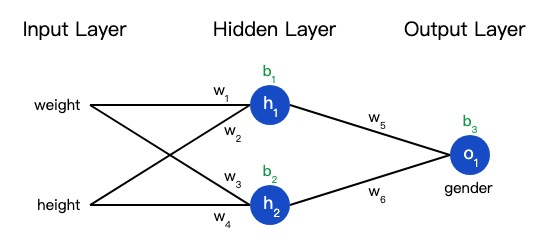

简写神经网络
激活函数
神经网络由许多的神经元构成，激活函数用于给神经网络中引入非线性元素，日常生活中的数据大多是非线性的，引入激活函数的神经网络可以用来拟合各种曲线。
Sigmoid
现有这样的数据
| Name | Weight (lb) | Height (in) | Gender |
|---|---|---|---|
| Alice | 133 | 65 | F |
| Bob | 160 | 72 | M |
| Charlie | 152 | 70 | M |
| Diana | 120 | 60 | F |
随意选取了135和66来标准化数据
现对数据进行一个简单的处理
| Name | Weight (-135) | Height (-66) | Gender |
|---|---|---|---|
| Alice | -2 | -1 | 1 |
| Bob | 25 | 6 | 0 |
| Charlie | 17 | 4 | 0 |
| Diana | -15 | -6 | 1 |
在训练网络之前引入损失函数来量化神经网络的好坏。
loss function
值越小，预测值越好，不断训练减小损失。

本博客所有文章除特别声明外，均采用 CC BY-NC-SA 4.0 许可协议。转载请注明来自 春日部防卫队秘密基地！